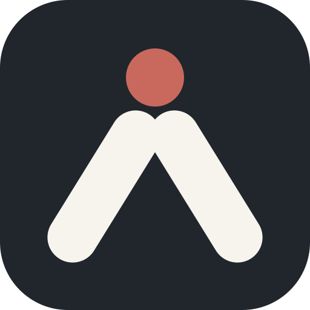
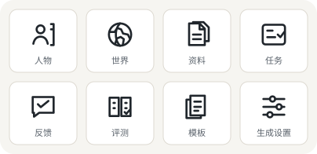
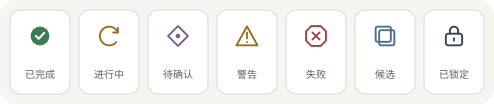
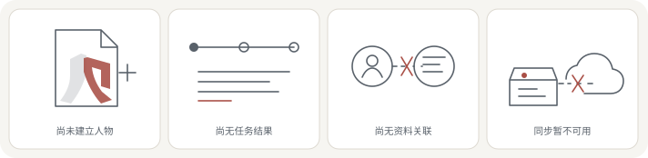

横向主标
用于帮助页、品牌板和低高度横向区域。
“人样”不是人物管理工具，而是让 AI Agent 在长期任务中保留经历、形成稳定个性，并以一致身份继续行动的工具。LOGO 需要同时表达持续存在的 Agent、可积累的记忆和独特人格。
所有尺寸使用同一几何骨架；16px 场景优先保证头部、左右笔画和整体人形不粘连。
基础组合只保留“人样”；需要品牌说明的入口使用完整产品组合“人样／让它有个人样”。
用于帮助页、品牌板和低高度横向区域。
用于登录页、首次设置、展开侧栏和系统信息。
小尺寸应用图标统一身体颜色，只保留品牌色头部，避免 16px 下出现双色断裂。

标志结构、留白和比例完全不变；主题只替换头部、右笔画与应用壳中性色，成功、警告和失败色不进入品牌标志。
正式标志只允许等比缩放和语义颜色替换；几何、笔画粗细与头身关系保持不变。
默认双色用于品牌主场景；单色用于打印和受限环境；反白用于深色侧栏与深色封面。
浅色表面使用深色左笔画和品牌色头部／右笔画。
打印或不可使用强调色时，全部几何统一为深色。
深色侧栏和封面使用统一暖白色，不叠加描边或发光。
安全留白不小于符号宽度的 25%；不要拉伸、旋转，或把成功／警告／失败色当作品牌色。
64px 符号至少保留 16px 独立空间。
始终等比缩放，不压扁头部或改变身体张角。
保持头部朝上和稳定站立重心。
失败、警告和成功色只表达系统状态。
实体图形保持 24×24、1.6px 线性骨架；状态依靠不同形状而不是只靠颜色；空状态只描述业务缺口，不增加拟人装饰。

用于对象标题、选择器和空状态，不与普通按钮图标混用。
entity-glyphs.svg
每种状态同时具备独立轮廓与中文标签，颜色只承担辅助语义。
status-symbols.svg
覆盖人物、任务结果、资料关系与同步四类缺口，每个场景最多使用一种强调色。
empty-states.svg最初的人形字标已锁定为唯一正式方向；全部图形均保存在项目内，不依赖外链图片。
不能只像普通用户头像；需要让人感受到它拥有稳定身份，并会跨任务继续存在。
不必把全部能力画出来，但应能联想到经历积累、身份核心或独特人格。
轮廓完整、重心稳定，在 favicon、侧栏和应用图标中保持同一识别骨架。
{kind=link}
{kind=link}
{kind=link}
{kind=link}
{kind=link}
{kind=link}
{kind=link}
{kind=link}
{kind=link}
{kind=link}
{kind=link}